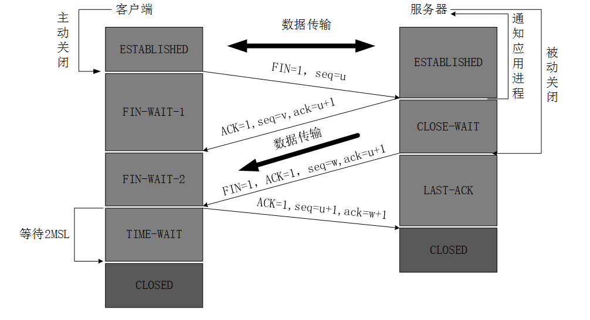
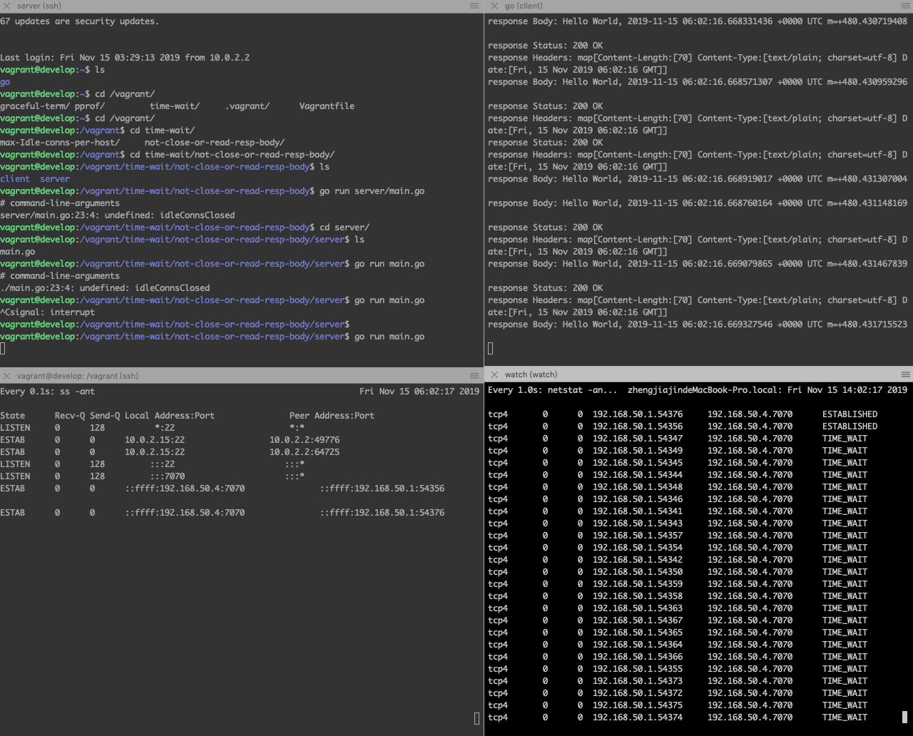
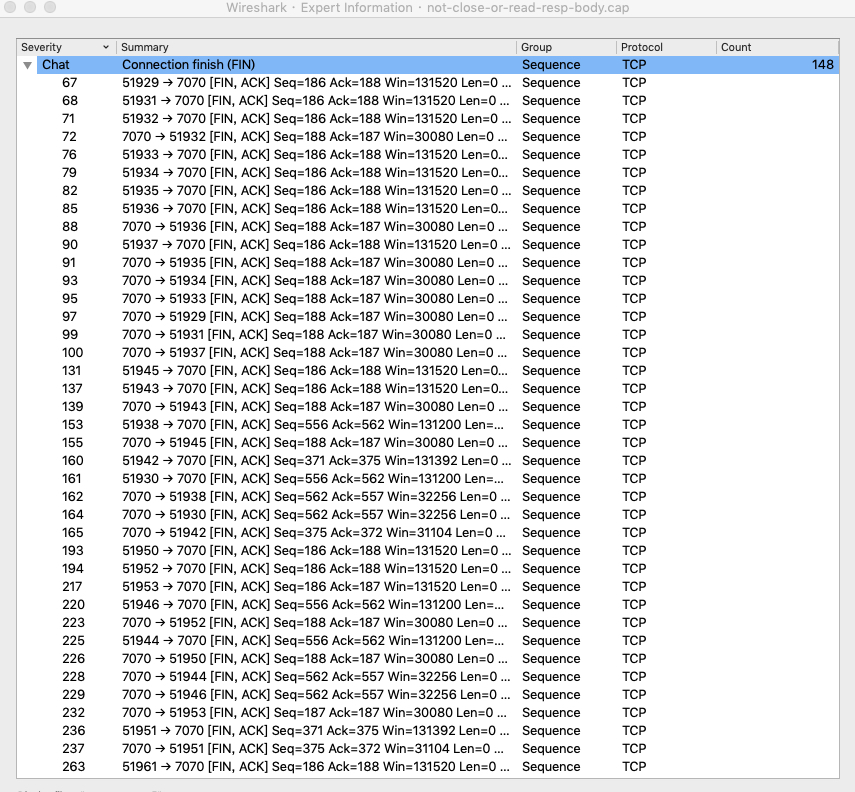

<!DOCTYPE html>
<html lang="en">
<head>
  <meta charset="utf-8">
  <meta http-equiv="X-UA-Compatible" content="IE=edge,chrome=1">
  <title>golang 大量 TIME_WAIT - zhengjiajin&#39;s blog</title>
  <meta name="renderer" content="webkit" />
<meta name="viewport" content="width=device-width, initial-scale=1, maximum-scale=1"/>

<meta http-equiv="Cache-Control" content="no-transform" />
<meta http-equiv="Cache-Control" content="no-siteapp" />

<meta name="theme-color" content="#f8f5ec" />
<meta name="msapplication-navbutton-color" content="#f8f5ec">
<meta name="apple-mobile-web-app-capable" content="yes">
<meta name="apple-mobile-web-app-status-bar-style" content="#f8f5ec">


<meta name="author" content="zhengjiajin" /><meta name="description" content=" TIME_WAIT and its design implications for protocols and scalable client server systems tcp rfc tuning-the-go-http-client-library-for-load-testing " /><meta name="keywords" content="Hugo, theme, even" />


<meta name="generator" content="Hugo 0.55.6 with even 4.0.0" />


<link rel="canonical" href="https://zjj2wry.github.io/post/golang/time-wait/" />
<link rel="apple-touch-icon" sizes="180x180" href="/apple-touch-icon.png">
<link rel="icon" type="image/png" sizes="32x32" href="/favicon-32x32.png">
<link rel="icon" type="image/png" sizes="16x16" href="/favicon-16x16.png">
<link rel="manifest" href="/manifest.json">
<link rel="mask-icon" href="/safari-pinned-tab.svg" color="#5bbad5">


<link href="/dist/even.c2a46f00.min.css" rel="stylesheet">
<link rel="stylesheet" href="https://cdn.jsdelivr.net/npm/@fancyapps/fancybox@3.1.20/dist/jquery.fancybox.min.css" integrity="sha256-7TyXnr2YU040zfSP+rEcz29ggW4j56/ujTPwjMzyqFY=" crossorigin="anonymous">


<meta property="og:title" content="golang 大量 TIME_WAIT" />
<meta property="og:description" content="
TIME_WAIT and its design implications for protocols and scalable client server systems
tcp rfc
tuning-the-go-http-client-library-for-load-testing
" />
<meta property="og:type" content="article" />
<meta property="og:url" content="https://zjj2wry.github.io/post/golang/time-wait/" />
<meta property="article:published_time" content="2019-11-14T20:29:58&#43;08:00"/>
<meta property="article:modified_time" content="2019-11-14T20:29:58&#43;08:00"/>

<meta itemprop="name" content="golang 大量 TIME_WAIT">
<meta itemprop="description" content="
TIME_WAIT and its design implications for protocols and scalable client server systems
tcp rfc
tuning-the-go-http-client-library-for-load-testing
">


<meta itemprop="datePublished" content="2019-11-14T20:29:58&#43;08:00" />
<meta itemprop="dateModified" content="2019-11-14T20:29:58&#43;08:00" />
<meta itemprop="wordCount" content="751">


<meta itemprop="keywords" content="" />
<meta name="twitter:card" content="summary"/>
<meta name="twitter:title" content="golang 大量 TIME_WAIT"/>
<meta name="twitter:description" content="
TIME_WAIT and its design implications for protocols and scalable client server systems
tcp rfc
tuning-the-go-http-client-library-for-load-testing
"/>

<!--[if lte IE 9]>
  <script src="https://cdnjs.cloudflare.com/ajax/libs/classlist/1.1.20170427/classList.min.js"></script>
<![endif]-->

<!--[if lt IE 9]>
  <script src="https://cdn.jsdelivr.net/npm/html5shiv@3.7.3/dist/html5shiv.min.js"></script>
  <script src="https://cdn.jsdelivr.net/npm/respond.js@1.4.2/dest/respond.min.js"></script>
<![endif]-->

</head>
<body>
  <div id="mobile-navbar" class="mobile-navbar">
  <div class="mobile-header-logo">
    <a href="/" class="logo">明月几时有</a>
  </div>
  <div class="mobile-navbar-icon">
    <span></span>
    <span></span>
    <span></span>
  </div>
</div>
<nav id="mobile-menu" class="mobile-menu slideout-menu">
  <ul class="mobile-menu-list">
    <a href="/">
        <li class="mobile-menu-item">Home</li>
      </a><a href="/post/">
        <li class="mobile-menu-item">Archives</li>
      </a><a href="/tags/">
        <li class="mobile-menu-item">Tags</li>
      </a><a href="/categories/">
        <li class="mobile-menu-item">Categories</li>
      </a>
  </ul>
</nav>
  <div class="container" id="mobile-panel">
    <header id="header" class="header">
        <div class="logo-wrapper">
  <a href="/" class="logo">明月几时有</a>
</div>

<nav class="site-navbar">
  <ul id="menu" class="menu">
    <li class="menu-item">
        <a class="menu-item-link" href="/">Home</a>
      </li><li class="menu-item">
        <a class="menu-item-link" href="/post/">Archives</a>
      </li><li class="menu-item">
        <a class="menu-item-link" href="/tags/">Tags</a>
      </li><li class="menu-item">
        <a class="menu-item-link" href="/categories/">Categories</a>
      </li>
  </ul>
</nav>
    </header>

    <main id="main" class="main">
      <div class="content-wrapper">
        <div id="content" class="content">
          <article class="post">
    
    <header class="post-header">
      <h1 class="post-title">golang 大量 TIME_WAIT</h1>

      <div class="post-meta">
        <span class="post-time"> 2019-11-14 </span>
        
          <span class="more-meta"> 751 words </span>
          <span class="more-meta"> 2 mins read </span>
        
      </div>
    </header>

    <div class="post-toc" id="post-toc">
  <h2 class="post-toc-title">Contents</h2>
  <div class="post-toc-content always-active">
    <nav id="TableOfContents">
<ul>
<li>
<ul>
<li><a href="#前提">前提</a></li>
<li><a href="#golang-time-wait">golang TIME_WAIT</a>
<ul>
<li><a href="#没有关闭或读取-response-body">没有关闭或读取 response body</a></li>
<li><a href="#使用了-golang-默认的-roundtripper">使用了 golang 默认的 RoundTripper</a></li>
</ul></li>
<li><a href="#常用命令">常用命令</a></li>
</ul></li>
</ul>
</nav>
  </div>
</div>
    <div class="post-content">
      <ul>
<li><a href="http://www.serverframework.com/asynchronousevents/2011/01/time-wait-and-its-design-implications-for-protocols-and-scalable-servers.html">TIME_WAIT and its design implications for protocols and scalable client server systems</a></li>
<li><a href="https://tools.ietf.org/html/rfc793#page-37">tcp rfc</a></li>
<li><a href="http://tleyden.github.io/blog/2016/11/21/tuning-the-go-http-client-library-for-load-testing/">tuning-the-go-http-client-library-for-load-testing</a></li>
</ul>

<h2 id="前提">前提</h2>

<p>
TIME_WAIT 状态会出现在 tcp 四次挥手主动关闭连接的一方。</p>
<div class="highlight"><div class="chroma">
<table class="lntable"><tr><td class="lntd">
<pre class="chroma"><span class="lnt">1
</span><span class="lnt">2
</span><span class="lnt">3
</span></pre></td>
<td class="lntd">
<pre class="chroma">TIME-WAIT - represents waiting for enough time to pass to be sure
the remote TCP received the acknowledgment of its connection
termination request.</pre></td></tr></table>
</div>
</div>
<p>TIME_WAIT 会等待 2 msl 再关闭连接(rfc 中定义的 2分钟，linux 中是 30s)</p>

<ol>
<li>如果没有等待两秒直接关闭连接，老的报文出现延迟重传，新建立的连接五元组相同，导致异常</li>
<li>进入 TIME_WAIT 后主动关闭连接的一方需要确认对方能收到 ack，如果没有收到 ack，被动关闭连接的一方会重传。假设没有等待直接关闭连接，重传会接受到 reset，导致异常</li>
</ol>

<h2 id="golang-time-wait">golang TIME_WAIT</h2>

<p>golang 导致大量 TIME_WAIT 的主要原因是频繁的建立短链接。</p>

<h3 id="没有关闭或读取-response-body">没有关闭或读取 response body</h3>
<div class="highlight"><div class="chroma">
<table class="lntable"><tr><td class="lntd">
<pre class="chroma"><span class="lnt"> 1
</span><span class="lnt"> 2
</span><span class="lnt"> 3
</span><span class="lnt"> 4
</span><span class="lnt"> 5
</span><span class="lnt"> 6
</span><span class="lnt"> 7
</span><span class="lnt"> 8
</span><span class="lnt"> 9
</span><span class="lnt">10
</span><span class="lnt">11
</span><span class="lnt">12
</span><span class="lnt">13
</span><span class="lnt">14
</span><span class="lnt">15
</span><span class="lnt">16
</span><span class="lnt">17
</span><span class="lnt">18
</span><span class="lnt">19
</span><span class="lnt">20
</span><span class="lnt">21
</span></pre></td>
<td class="lntd">
<pre class="chroma">//https://golang.org/src/net/http/response.go
// Body represents the response body.
//
// The response body is streamed on demand as the Body field
// is read. If the network connection fails or the server
// terminates the response, Body.Read calls return an error.
//
// The http Client and Transport guarantee that Body is always
// non-nil, even on responses without a body or responses with
// a zero-length body. It is the caller&#39;s responsibility to
// close Body. The default HTTP client&#39;s Transport may not
// reuse HTTP/1.x &#34;keep-alive&#34; TCP connections if the Body is
// not read to completion and closed.
//
// The Body is automatically dechunked if the server replied
// with a &#34;chunked&#34; Transfer-Encoding.
//
// As of Go 1.12, the Body will also implement io.Writer
// on a successful &#34;101 Switching Protocols&#34; response,
// as used by WebSockets and HTTP/2&#39;s &#34;h2c&#34; mode.
Body io.ReadCloser</pre></td></tr></table>
</div>
</div>
<p>如下，会有大量的 time wait 出现在客户端
</p>

<p>抓包查看发现有大量的 FIN-ACK(server 被动关闭连接，server 端会直接进入到 close wait 状态)
</p>

<h3 id="使用了-golang-默认的-roundtripper">使用了 golang 默认的 RoundTripper</h3>

<p>如果没有设置 MaxIdleConnsPerHost，其他的都会被回收，也会导致客户端大量 time wait, 抓包后效果和上面的一致。另外就是 ss 命令比 netstat 快很多很多</p>

<p>上面两个原因都是因为客户端没有复用连接导致的，因为 source port 是自动分配的，有范围限制，短链接需要回收端口，不然会导致无法新建连接。如果你是 server 端，会因为无法新建连接导致性能问题。在 k8s 环境里，通过 svc 访问，大量的短链接会导致 coredns 的 qps 较高。</p>

<h2 id="常用命令">常用命令</h2>

<p>查看端口访问</p>
<div class="highlight"><div class="chroma">
<table class="lntable"><tr><td class="lntd">
<pre class="chroma"><code class="language-sh" data-lang="sh"><span class="lnt">1
</span></code></pre></td>
<td class="lntd">
<pre class="chroma"><code class="language-sh" data-lang="sh">cat /proc/sys/net/ipv4/ip_local_port_range</code></pre></td></tr></table>
</div>
</div><div class="highlight"><div class="chroma">
<table class="lntable"><tr><td class="lntd">
<pre class="chroma"><span class="lnt">1
</span><span class="lnt">2
</span><span class="lnt">3
</span><span class="lnt">4
</span><span class="lnt">5
</span><span class="lnt">6
</span><span class="lnt">7
</span><span class="lnt">8
</span></pre></td>
<td class="lntd">
<pre class="chroma">netstat
    -a --all 显示所有
    -n --numeric 显示数字
    -p 显示进程相关
    -t 显示 tcp
    -u 显示 udp
    -s 统计信息
    -l --lisening 显示监听中的</pre></td></tr></table>
</div>
</div>
<p>查看统计信息</p>
<div class="highlight"><div class="chroma">
<table class="lntable"><tr><td class="lntd">
<pre class="chroma"><code class="language-bash" data-lang="bash"><span class="lnt">1
</span></code></pre></td>
<td class="lntd">
<pre class="chroma"><code class="language-bash" data-lang="bash">netstat -s</code></pre></td></tr></table>
</div>
</div>
<p>查看所有的 tcp 连接</p>
<div class="highlight"><div class="chroma">
<table class="lntable"><tr><td class="lntd">
<pre class="chroma"><code class="language-bash" data-lang="bash"><span class="lnt">1
</span></code></pre></td>
<td class="lntd">
<pre class="chroma"><code class="language-bash" data-lang="bash">netstat -ant</code></pre></td></tr></table>
</div>
</div>
<p>查看路由表</p>
<div class="highlight"><div class="chroma">
<table class="lntable"><tr><td class="lntd">
<pre class="chroma"><code class="language-bash" data-lang="bash"><span class="lnt">1
</span></code></pre></td>
<td class="lntd">
<pre class="chroma"><code class="language-bash" data-lang="bash">netstat -r</code></pre></td></tr></table>
</div>
</div>
    </div>

    <div class="post-copyright">
  <p class="copyright-item">
    <span class="item-title">Author</span>
    <span class="item-content">zhengjiajin</span>
  </p>
  <p class="copyright-item">
    <span class="item-title">LastMod</span>
    <span class="item-content">
        2019-11-14
        
    </span>
  </p>
  
  
</div>
<footer class="post-footer">
      
      <nav class="post-nav">
        
        <a class="next" href="/post/docker/image-graph-driver/">
            <span class="next-text nav-default">docker aufs 镜像驱动</span>
            <span class="next-text nav-mobile">Next</span>
            <i class="iconfont icon-right"></i>
          </a>
      </nav>
    </footer>
  </article>
        </div>
        
  
  

  

      </div>
    </main>

    <footer id="footer" class="footer">
      <div class="social-links">
      <a href="mailto:your@email.com" class="iconfont icon-email" title="email"></a>
      <a href="http://localhost:1313" class="iconfont icon-stack-overflow" title="stack-overflow"></a>
      <a href="http://localhost:1313" class="iconfont icon-twitter" title="twitter"></a>
      <a href="http://localhost:1313" class="iconfont icon-facebook" title="facebook"></a>
      <a href="http://localhost:1313" class="iconfont icon-linkedin" title="linkedin"></a>
      <a href="http://localhost:1313" class="iconfont icon-google" title="google"></a>
      <a href="http://localhost:1313" class="iconfont icon-github" title="github"></a>
      <a href="http://localhost:1313" class="iconfont icon-weibo" title="weibo"></a>
      <a href="http://localhost:1313" class="iconfont icon-zhihu" title="zhihu"></a>
      <a href="http://localhost:1313" class="iconfont icon-douban" title="douban"></a>
      <a href="http://localhost:1313" class="iconfont icon-pocket" title="pocket"></a>
      <a href="http://localhost:1313" class="iconfont icon-tumblr" title="tumblr"></a>
      <a href="http://localhost:1313" class="iconfont icon-instagram" title="instagram"></a>
      <a href="http://localhost:1313" class="iconfont icon-gitlab" title="gitlab"></a>
      <a href="http://localhost:1313" class="iconfont icon-bilibili" title="bilibili"></a>
  <a href="https://zjj2wry.github.io/index.xml" type="application/rss+xml" class="iconfont icon-rss" title="rss"></a>
</div>

<div class="copyright">
  <span class="power-by">
    Powered by <a class="hexo-link" href="https://gohugo.io">Hugo</a>
  </span>
  <span class="division">|</span>
  <span class="theme-info">
    Theme - 
    <a class="theme-link" href="https://github.com/olOwOlo/hugo-theme-even">Even</a>
  </span>

  

  <span class="copyright-year">
    &copy; 
    2017 - 
    2019
    <span class="heart">
      <i class="iconfont icon-heart"></i>
    </span>
    <span class="author">zhengjiajin</span>
  </span>
</div>
    </footer>

    <div class="back-to-top" id="back-to-top">
      <i class="iconfont icon-up"></i>
    </div>
  </div>
  
  <script src="https://cdn.jsdelivr.net/npm/jquery@3.2.1/dist/jquery.min.js" integrity="sha256-hwg4gsxgFZhOsEEamdOYGBf13FyQuiTwlAQgxVSNgt4=" crossorigin="anonymous"></script>
  <script src="https://cdn.jsdelivr.net/npm/slideout@1.0.1/dist/slideout.min.js" integrity="sha256-t+zJ/g8/KXIJMjSVQdnibt4dlaDxc9zXr/9oNPeWqdg=" crossorigin="anonymous"></script>
  <script src="https://cdn.jsdelivr.net/npm/@fancyapps/fancybox@3.1.20/dist/jquery.fancybox.min.js" integrity="sha256-XVLffZaxoWfGUEbdzuLi7pwaUJv1cecsQJQqGLe7axY=" crossorigin="anonymous"></script>
<script type="text/javascript" src="/dist/even.26188efa.min.js"></script>


</body>
</html>
